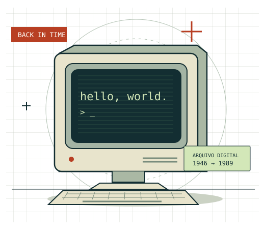

1946
Uma nova escala de cálculo
O ENIAC é apresentado ao público. Com milhares de válvulas, ele se torna um marco da computação eletrônica.
Computer History Museum ↗Um quiz através do tempo
Dos computadores que ocupavam salas inteiras à Web que conecta ideias. Explore as descobertas que construíram o nosso mundo digital.
Protótipo visual · 3 questões modelo · Sem cadastro

Três marcos. Muitas mudanças.
Cada invenção abre uma nova possibilidade. Conheça alguns dos acontecimentos que inspiram nossas perguntas.
O ENIAC é apresentado ao público. Com milhares de válvulas, ele se torna um marco da computação eletrônica.
Computer History Museum ↗A Intel apresenta o 4004. O microprocessador reúne funções de processamento em um único circuito integrado.
Computer History Museum ↗No CERN, Tim Berners-Lee propõe a World Wide Web para facilitar o compartilhamento de informações.
CERN ↗Conhecimento em construção
O CronoTech é um projeto acadêmico para estudantes e pessoas curiosas sobre a história da tecnologia, com foco em computação e tecnologias digitais.
CP1: estrutura e identidade visual. Correção, avanço e pontuação serão desenvolvidos no CP2.